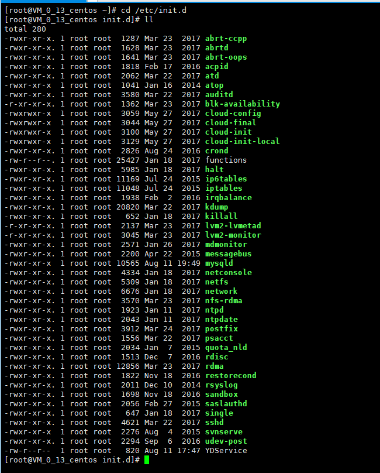

查看所有的服务的状态
第一种方式：通过setup来查看
第二种方式：查看/etc/init.d目录下的文件，每个文件对应一个服务

第三种方式（推荐使用，这种方式还可以查看服务在每一种运行级别下是否自动启动）：通过chkconfig --list命令来查看
设置服务开机启动（只是设置了开机启动，还需要配合service命令来马上开启服务）
设置在某个服务在某个运行级别是否自动启动，基本语法：chkconfig --level 运行级别的号码(从0到6) 服务名称 on或者off，示例：chkconfig --level 5 iptables off 命令的的意思是在运行级别为5的时候，iptables服务（防火墙）不会自动启动
设置在所有运行级别下某个服务是否自动启动，基本语法：chkconfig 服务名称 on或者off，示例：chkconfig iptables on 命令的意思是在所有的运行级别下设置iptables服务（防火墙）自动启动